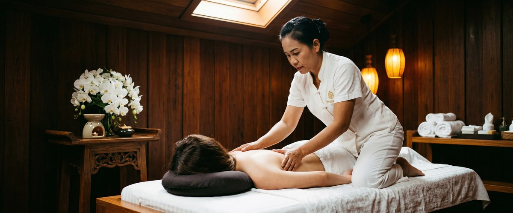
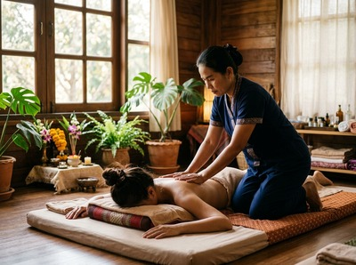

★★★★★ Quality gate failures: hook. Review and edit before removing this notice. ★★★★★
If Glasgow gets its way, a lot more of us will be moving a lot more often over the next ten years.

Active Glasgow is the city's Physical Activity and Sport Strategy for 2025–2035. It sets out a ten-year vision to get more people moving, more often. It's backed by Glasgow Life, NHS Greater Glasgow and Clyde, sportscotland, and a wide group of city partners.
But here's something the strategy document won't tell you: getting active is only half the picture. What happens to your body after the run, the gym session, or the spin class matters just as much as the effort you put in. That's where Thai massage comes in — and why more active Glaswegians are walking through the door at Victoria Chambers.
The strategy responds to a clear problem. Around 34% of Glasgow adults and 31% of children don't meet the NHS recommendation of 150 minutes of moderate activity per week. Active Glasgow aims to change that.
It works to improve access to sport and physical activity across every neighbourhood, removing barriers around income, geography, and culture. The strategy covers active travel, community sport clubs, school programmes, and public green spaces.

The ambition is real and the funding is serious. Glasgow Life is involved in the £1.1 million Get Active Scotland fund, which launched in late 2025 to support community groups across the city.
More people moving is a genuine public health win. But more people moving also means more muscles under strain, more joints under load, and more bodies in need of proper recovery.
Most fitness advice focuses on the workout itself: what to do, how often, how hard. Recovery gets far less attention. But recovery is where the actual physical change happens.
Your muscles don't get stronger during a session. They get stronger in the hours and days after, during repair.
When recovery is neglected, the results are predictable. Muscle tightness builds up over time. Range of motion drops.
Small niggles become injuries. People end up stepping back from the very habit they were trying to build — not from lack of motivation, but from discomfort that makes showing up feel harder each time.
Thai massage uses assisted stretching, acupressure, and rhythmic compression along the body's sen energy lines. It works on the soft tissue and connective structures that training puts under stress.
It helps restore flexibility, reduce tightness, and support the body's natural repair process. You can book a session online and be back on your feet for your next workout feeling genuinely better for it.
If you're stepping up your activity levels in response to Active Glasgow's push, Thai sports massage is worth knowing about. It's not a luxury treatment. It's a targeted recovery tool.
It combines deep pressure work on overworked muscle groups with the joint work and stretching that Thai massage is known for. That makes it effective for runners, cyclists, gym users, and anyone in regular physical training.
A standard deep tissue massage focuses mainly on releasing tension within the muscle itself. Thai sports massage also works on the surrounding connective tissue and joint mobility.
For someone who runs along the River Kelvin twice a week or plays five-a-side at a local leisure centre, that full-picture approach makes a real difference to how they feel the next day.
Not everyone pursuing Active Glasgow's goals is a competitive athlete. Many people are simply trying to walk more, take up swimming, get back on a bike, or join a local walking group.
For this group, traditional Thai massage is an ideal fit. It's performed fully clothed on a mat, using assisted stretches and acupressure points.
It works on the whole body rather than one problem area. That suits people who are generally more active but not dealing with a specific injury.
Sessions improve circulation, loosen the joints, and leave the body feeling noticeably more mobile. Many regular clients describe it as similar to a deep stretch class — but one where the therapist does most of the work.
Maliwan, the founder of Glasgow Thai Massage, trained at Wat Pho in Bangkok and has over 20 years of experience. The approach at the studio has always been about treating the whole person — not just reacting to a single tight muscle.
The smartest move is to treat massage as a regular part of how you look after your body — not an occasional treat. For someone doing two or three activity sessions a week, a monthly Thai massage can reduce the tightness that builds up and starts to affect how you move and feel.
For those training more intensively, fortnightly sessions often work better.
Glasgow Thai Massage is on West Nile Street in Glasgow City Centre. It's a short walk from Buchanan Street subway and easy to reach from most parts of the city.
If you're getting more active this year, adding a regular recovery session to your calendar is one of the most practical things you can do to protect that progress. Book your appointment online and give your body the attention it's earning.
Thai massage uses assisted stretching, acupressure, and rhythmic compression along the body's sen energy lines. These techniques reduce muscle tension, improve circulation, and restore joint mobility. They target the soft tissue tightness that builds up after regular physical activity. Regular sessions can help stop small niggles becoming injuries and keep your body moving freely between training sessions.
Active Glasgow is a ten-year strategy launched by Glasgow Life in partnership with NHS Greater Glasgow and Clyde, sportscotland, and other city organisations. It aims to increase physical activity across all Glasgow communities. This matters particularly for the 34% of adults who don't currently meet NHS activity recommendations. The strategy focuses on removing barriers around income, geography, and culture.
Yes. Thai sports massage is a targeted treatment designed for active bodies. It puts more emphasis on deep pressure work on specific muscle groups. It also includes the joint work and assisted stretching that traditional Thai massage is known for. It suits runners, gym users, cyclists, and anyone recovering from regular training. Traditional Thai massage is a full-body treatment that works well as a general recovery and mobility session.
For most people doing two or three activity sessions per week, a monthly massage is a solid starting point. It helps clear built-up muscle tightness before it starts affecting your movement or comfort. If you're training more intensively, fortnightly sessions may serve you better. Your therapist at Glasgow Thai Massage can advise on a schedule based on what you're doing and how your body is responding.
Glasgow Thai Massage is at Floor 3, Suite 4, Victoria Chambers, 142 West Nile Street, Glasgow G1 2RQ. It's a short walk from Buchanan Street subway and easy to reach from most parts of the city centre. You can book directly through the online booking form at glasgowthaimassage.co.uk. Same-week appointments are often available.